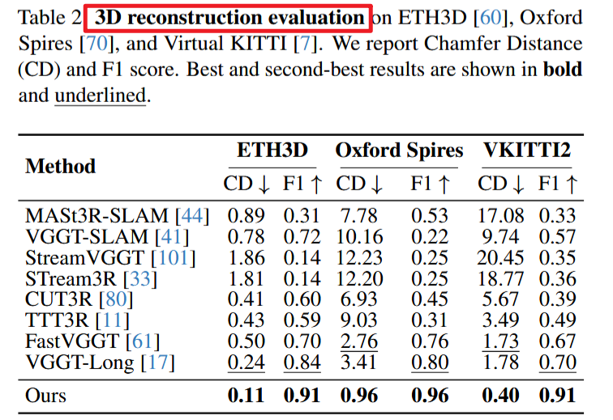

==Test-Time Training==；VGGT 衍生；
Scal3R： 在每个 chunk 的前向里引入一个在线更新的全局记忆（AMU的参数，hidden state），让局部几何预测本身就带着长程先验。Neural Fast-weight Memory.
VGGT-Long 的做法：把一个长序列切成 overlap chunks，每一个 chunk 独立通过 VGGT 进行局部重建，然后把这些 chunk 的重建结果进行 local sim(3) alignment。同时使用全局的特征提取与匹配，找到回环（相隔很远的帧之间的相似度很高 → 认为又回到了同一地方），对于回环的 chunk 与起点 chunk 进行拼接得到 loop-centric chunk，送到 VGGT 中进行重建，再将重建结果与 两个原始的 chunk 的结果一起送到 loop-wise sim(3) alignment 中对齐。最后是把这两种对齐统一优化（借助 LM）。
VGGT-Long 的问题： chunk 与 chunk 在前向预测几乎无信息交互，全局一致性只能在后端通过 Sim(3) 拼接补偿。
训练资源：32 A800 GPUs / 3 days
Method

==Memory 是 AMU 的参数。 hidden state==
Global Context Memory (GCM)
GCM 被插在第 4、11、17、24 个 global attention layer 之后，总新增参数约 75.55M。
lightweight / neural sub-networks that are rapidly adapted during test time / via self-supervised objectives.
GCM 由三部分组成：
- 一个 QKV projection；
- 三个轻量 MLP， Adaptive Memory Units (AMUs)；
- 一个 output projection。
现有 TTT 难以扩展到超长上下文——频繁小批量更新严重拖慢IO； Scal3R 借鉴 LaCT，把整个 chunk 内所有 token 当作一次更新单元，对 AMU 做 chunk-wise update。
local chunk → token → K,V → 作为当前 chunk 的上下文，自监督更新 AMU（θ ← θ − η∇θLttt(K,V)）,其中 𝜂 是由输入 token 预测的 token-wise learning rate，损失采用标准 dot-product loss。再用更新后的 AMU 去变换 query Q，输出增强后的 token。
Global Context Synchronization (GCS)
每个 GPU 处理一个局部的 chunk 后，现在本地根据当前 chunk 进行 AMU 更新，然后通过 all-reduce 把各 GPU 的 AMU 更新同步，然后求和广播回所有设备，这样所有 chunk 都共享到了 序列级的上下文。
Scal3R 属于前端增强，后端还是 VGGT-Long
VGGT_long: $$
{I_t}{t=1}^N \to {\mathcal C_m}{m=1}^M \to \text{VGGT on each }\mathcal C_m \to (\hat{\Pi}_m,\hat{D}_m,\hat{P}_m) \to \text{overlap Sim(3) align} \to \text{loop closure / pose graph} \to \text{global reconstruction}.
$$
Scal3R: {It}t = 1N → {𝒞m}m = 1M → VGGT backbone + GCM → chunk-wise TTT update on AMU → GCS across chunks → (Π̂m,D̂m,P̂m) → follow VGGT-Long align/fuse → loop candidate retrieval + pose graph → global reconstruction.
Experiments